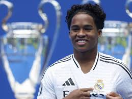

Willian Estevao
Un jeune prodige brésilien avec une technique impressionnante et une vision du jeu exceptionnelle.
Buts: 10
Club: Palmeiras
Âge: 17
Cole Palmer
Un attaquant prometteur anglais avec une rapidité et une créativité qui impressionnent.
Buts: 8
Club:Chelsea
Âge: 20

Endrick
Un jeune talent brésilien dont les performances attirent déjà l'attention des plus grands clubs européens.
Buts: 15
Club: Real Madrid
Âge: 16
Lamine Yamal
Un prodige espagnol qui allie technique, vision et dribble pour émerveiller les spectateurs.
Buts: 7
Club: FC Barcelone
Âge: 17
Classement des Jeunes Talents
| Rang | Nom | Âge | Buts | Club |
|---|---|---|---|---|
| 1 | Endrick | 16 | 15 | Palmeiras |
| 2 | Willian Estevao | 17 | 10 | Santos FC |
| 3 | Cole Palmer | 20 | 8 | Manchester City |
| 4 | Lamine Yamal | 17 | 7 | FC Barcelone |